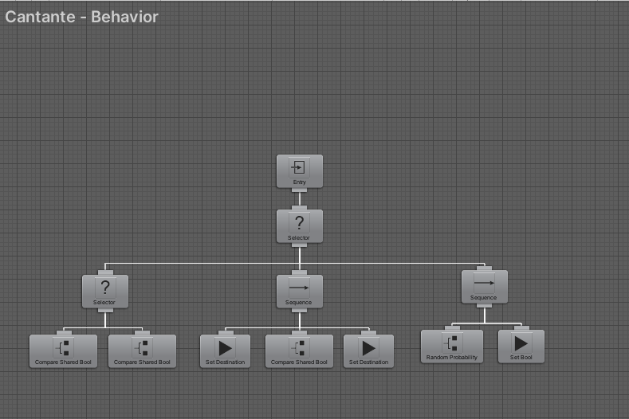
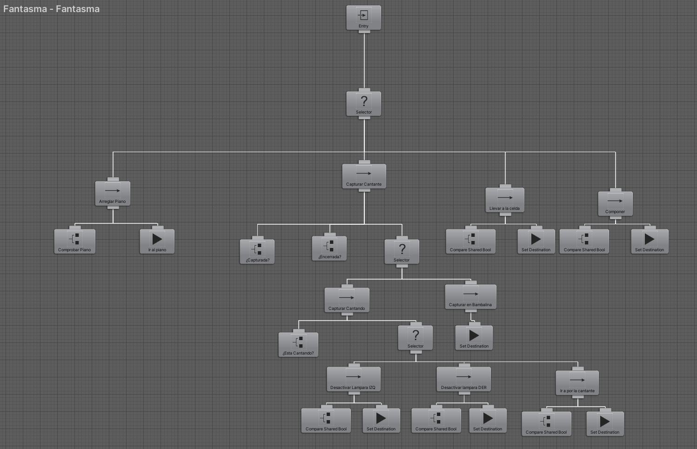

Práctica 3:
El fantasma de la ópera
En este apartado se explica el funcionamiento de la práctica junto con algunas pruebas realizadas a lo largo del desarrollo y los algoritmos usados. Junto con las decisiones tomadas para la implementación de algoritmos.
Memoria técnica del prototipo
En esta práctica se ha planteado una de las novelas clásicas más conocida de la época actual, hablamos de el fantasma de la ópera. Con esa idea y la de desarrollar más conocimientos en el uso de árboles de comportamiento, se ha propuesto hacer varios agentes inteligentes. En concreto existen 3 tipos de agentes inteligentes y 1 controlado por el jugador en esta práctica:
- Público:
El público es el agente más básico de todos ya que su único comportamiento es el de moverse de un punto a otro del mapa. Este punto está fijado desde el inicio y no cambia. Además de esto, la zona del mapa donde se va a realizar ese desplazamiento no es cambiante por lo que la ruta de un punto a otro no requiere de demasiados cálculos.
Sin embargo el público es clave para el comportamiento del Fantasma ya que las deciones que este tome se verán afectadas si hay o no público en el patio de butacas. - Cantante:
La cantante es el personaje en el cual se va a basar gran parte del comportamiento del Fantasma ya que la misión principal de este es capturar a la cantante y llevarsela a una celda secreta que tiene preparada para ella. Trabajar en la ópera mientras un fantasma quiere secuestrarte somete a la cantante a mucha presión y de manera aleatoria, la cantante se verá obligada a parar la obra e irse detrás del escenario por un ataque de ansiedad. Este estado de angustia se le quitará siempre que su amante el Vizconde vaya hacia ella y la anime. - Fantasma:
El fantasma es el antagonista de esta historia ya que hará todo lo posible para capturar a la cantante y encerrarla en una celda donde solamente él pueda verla. Para conseguir esto tendrá que deshacerse del público primero, la manera de hacerlo será cortando las cuerdas que sostienen 2 lámparas que se encuentran encima del patio de butacas. Al caer las lámparas, el público saldrá huyendo y podrá pasar por el escenario sin que nadie le vea. Si nadie hace nada para impedirlo, el fantasma encerrará a la cantante con éxito pero el jugador podrá controlar al Vizconde para poder ponerle las cosas más difíciles. -
Vizconde:
Este agente es controlado por el jugador y tiene como misión impedir que el fantasma capture y encierre a la cantante. Para esto tendrá que arreglar las lámparas cuando el fantasma las tire sobre el público, esto provocará que el público vuelva y que el fantasma no pueda pasar por el escenario. Podrá encontrar la guarida del fantasma y estando alli, romper su piano y sus cuadros. Esto llamará la atención del fantasma que dejará de hacer todo lo que esté haciendo para ir a enfrentarse contigo. Por último, si el fantasma consigue atrapar a la cantante, el jugador puede interceptar al fantasma y golpearlo para que suelte a la cantante o en caso de encontrar la celda donde la tiene retenida, puede desatarla para que esta vuelva al escenario.
Interfaz de Usuario
BLA BLA BLA BLA BLABLA BLA BLA BLA BLABLA BLA BLA BLA BLABLA BLA BLA BLA BLABLA BLA BLA BLA BLABLA BLA BLA BLA BLABLA BLA BLA BLA BLABLA BLA BLA BLA BLABLA BLA BLA BLA BLABLA BLA BLA BLA BLABLA BLA BLA BLA BLABLA BLA BLA BLA BLABLA BLA BLA BLA BLABLA BLA BLA BLA BLABLA BLA BLA BLA BLABLA BLA BLA BLA BLABLA BLA BLA BLA BLABLA BLA BLA BLA BLABLA BLA BLA BLA BLABLA BLA BLA BLA BLABLA BLA BLA BLA BLABLA BLA BLA BLA BLABLA BLA BLA BLA BLABLA BLA BLA BLA BLABLA BLA BLA BLA BLABLA BLA BLA BLA BLABLA BLA BLA BLA BLABLA BLA BLA BLA BLABLA BLA BLA BLA BLABLA BLA BLA BLA BLABLA BLA BLA BLA BLABLA BLA BLA BLA BLABLA BLA BLA BLA BLABLA BLA BLA BLA BLABLA BLA BLA BLA BLABLA BLA BLA BLA BLABLA BLA BLA BLA BLABLA BLA BLA BLA BLABLA BLA BLA BLA BLABLA BLA BLA BLA BLABLA BLA BLA BLA BLABLA BLA BLA BLA BLABLA BLA BLA BLA BLABLA BLA BLA BLA BLABLA BLA BLA BLA BLABLA BLA BLA BLA BLABLA BLA BLA BLA BLABLA BLA BLA BLA BLABLA BLA BLA BLA BLABLA BLA BLA BLA BLABLA BLA BLA BLA BLABLA BLA BLA BLA BLABLA BLA BLA BLA BLABLA BLA BLA BLA BLABLA BLA BLA BLA BLABLA BLA BLA BLA BLABLA BLA BLA BLA BLABLA BLA BLA BLA BLABLA BLA BLA BLA BLABLA BLA BLA BLA BLABLA BLA BLA BLA BLABLA BLA BLA BLA BLABLA BLA BLA BLA BLABLA BLA BLA BLA BLABLA BLA BLA BLA BLABLA BLA BLA BLA BLABLA BLA BLA BLA BLABLA BLA BLA BLA BLABLA BLA BLA BLA BLABLA BLA BLA BLA BLABLA BLA BLA BLA BLABLA BLA BLA BLA BLABLA BLA BLA BLA BLABLA BLA BLA BLA BLABLA BLA BLA BLA BLA
Controles / Acciones
Para el movimiento del jugador se ha optado por 2 alternativas, además del resto de acciones que puede realizar el jugador si controla al Vizconde:
| Acción | Descripción | Botón 1 / Acción 1 | Botón 2 / Acción 2 |
|---|---|---|---|
| Arriba | Movimiento vertical hacia arriba. | W | Flecha Arriba |
| Abajo | Movimiento vertical hacia abajo. | S | Flecha Abajo |
| Derecha | Movimiento horizontal hacia derecha. | D | Flecha Derecha |
| Izquierda | Movimiento horizontal hacia izquierda. | A | Flecha Izquierda |
| Arreglar lámparas | Arreglas las lámparas para que el público vuelva a su sitio. | Colisión con la lámpara. | - |
| Animar Cantante | Animas a la cantante cuando esta se asusta y se va detrás del escenario. | Colisión con la cantante. | - |
| Salvar Cantante | Haces que la cantante vuelva al escenario. | Colisionar con el fantasma mientras que este lleva a la cantante encima. | Colisionar con la cantante cuando esta está en la sála de música. |
| Montar en barca | Te montas en la barca, lo que hace que cruces el río de un lado a otro. | Colisionar con las barcas. | - |
Notas de la implementación.
Para la implementación de esta práctica hemos cogido el diseño del mapa del enunciado y lo hemos transformado en una serie de habitaciones conectadas.
La habitación central donde se encuentra la cantante (Agente de color verde) es el escenario que tiene al público con las lámparas sobre sus cabezas.
En la sala de la derecha se encuentra el Vizconde (Agente Amarillo) y el fantasma(Agente rojo) se encuentra en su escondite de donde saldrá para intentar capturar a la cantante.

El comportamiento del Vizconde no se ha modificado ya que es el que venía por defecto con la primera versión de la práctica. Los controles pueden verse en el apartado de Controles de esta página.
Al comienzo de la ejecución, la cantante está en el escenario actuando y de manera aleatoria se empezará a sentir mal y tendrá que retirarse a la sala que detrás del escenario. Aqui esperará a que el Vizconde venga a animarla a seguir actuando.
(GIF CANTANTE ASUSTANDOSE Y VIZCONDE DANDO APOYO)
El comportamiento de la cantante está programado usando Behavior Design de la siguiente manera:

La parte central de este árbol de comportamiento lo que hará será hacer un Set del destino al que tiene que ir la cantante por defecto (Escenario) y está el flag de ASUSTADA activo, se moverá detrás del escenario.
Este flag se cambia desde 2 sitios:
- Se pone a TRUE en la parte derecha del árbol de comportamiento. En esta parte del árbol se lanza un random y si este está dentro del rango que le hemos dado, esta variable cambia su valor.
- Desde código hacemos una comprobación de colisión entre la cantante y el Vizconde. Si estos chocan, la variable cambia su valor a FALSE.
private void OnCollisionEnter(Collision collision){
if(collision.gameObject.tag == "Vizconde"){cantante.SetVariableValue("Asustada",false);}}
El fantasma es la parte más interesante de la práctica ya que es el que tiene una mayor carga a la hora de tomar decisiones. Para esto, se ha usado también Behavior Tree con algunas modificaciones en el código para la activación de FLAGS.
El árbol que describe el comportamiento del fantasma es el siguiente:

La parte de la izquierda del árbol es la parte con más prioridad, por eso la utilizamos para comprobar si el piano está arreglado. En caso de que el piano no esté arreglado, el fantasma deja todo lo que esté haciendo para ir corriendo a arreglar su preciado piano.
En caso de que le pille llevando a la cantante a su celda, este la soltará para dirigirse corriendo a su sala de música.
La parte central del árbol es la que se utiliza cuando la cantante tiene que ser capturada dependiendo de si está cantando o está en bambalinas. Esa parte del árbol es donde se hace la toma de decisión para ver si hay público o no. En caso de que haya público, este irá a tirar las lámparas y posteriormente irá a capturar a la cantante.
Las últimas 2 ramas del árbol describen el comportamiento cuando la cantante ya ha sido capturada. La opción de la izquierda comprueba que efectivamente la tiene capturada y si es asi lleva a la cantante a su celda. El árbol de más a la derecha describe el comportamiento para cuando la cantante ya está encerrada y el fantasma puede dirigirse a su sala de música a componer hasta que el Vizconde le empiece a molestar con sus acciones sobre el escenario.
Atajos de teclado para la realización de pruebas
Para la realización del testing de los diferentes apartados que componen la práctica, hemos optado por hacer una serie de atajos de teclado para que las pruebas puedan realizarse de una manera más rápida y poder evitar fallos como quedarnos atrapados en zonas del mapa por la falta de barca. Estas teclas que hemos designado son:
| Acción | Tecla asignada |
|---|---|
| Cambiar estado de ambas lámparas. | E |
| Teletransporte al spawn del Vizconde | R |
| Teletransporte a la celda | C |
| Teletransporte al piano. | T |
| Cambiar cámara. | Space |
Referencias
- Behavior Designer
- Búsquedas de Caminos
- Tutorial de configuración de NavMesh
- MonoBehaviour.StartCoroutine
- Millington, I.: Artificial Intelligence for Games. CRC Press, 3rd Edition (2019)